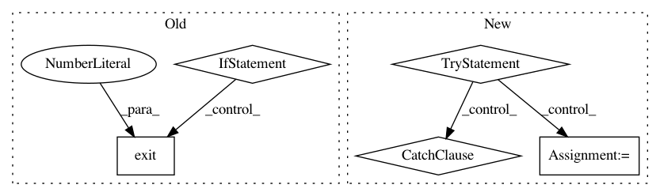

6ceb6c78418b099238edf5300706fa683bccbb10,tests/testOpInterpMissingData.py,,,#,242
Before Change
if __name__ == "__main__":
import sys
import nose
sys.argv.append("--nocapture") // Don"t steal stdout. Show it on the console as usual.
sys.argv.append("--nologcapture") // Don"t set the logging level to DEBUG. Leave it alone.
ret = nose.run(defaultTest=__file__)
if not ret: sys.exit(1)
After Change
import unittest
from numpy.testing import assert_array_almost_equal, assert_array_equal
try:
from scipy.interpolate import UnivariateSpline
haveScipy = True
except ImportError:
haveScipy = False
np.set_printoptions(precision=3, linewidth=80)
_testDescriptions = ["large block empty", "single layer empty", "last layer empty", "first block empty", \
"second to last layer empty", "second layer empty", "first layer empty", \
In pattern: SUPERPATTERN
Frequency: 3
Non-data size: 5
Instances
Project Name: ilastik/ilastik
Commit Name: 6ceb6c78418b099238edf5300706fa683bccbb10
Time: 2013-06-12
Author: webmaster@burgerdev.de
File Name: tests/testOpInterpMissingData.py
Class Name:
Method Name:
Project Name: vatlab/SoS
Commit Name: a8a37622f0ef987ca83c9b401700d0fcbece9b70
Time: 2016-12-12
Author: ben.bog@gmail.com
File Name: sos/__main__.py
Class Name:
Method Name: cmd_convert
Project Name: undertheseanlp/underthesea
Commit Name: 45d7f12d66addc6235333e70ebefefce96b86150
Time: 2021-01-07
Author: anhv.ict91@gmail.com
File Name: underthesea/sentiment/general/__init__.py
Class Name:
Method Name: sentiment